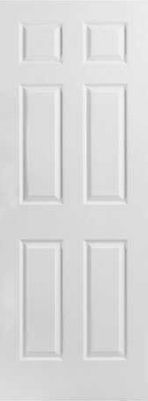
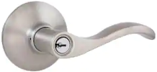
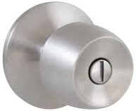

First, we should mention the benefits of knowing how to open a door
Knowing how to open a door be used to:
Get inside of a room with a closed door and no windows.
Get outside of a room with a closed door and no windows.
No longer have to leave your front door open all the time.
Open doors.
Impress girls.
Impress guys.
Impress dogs.
Impress any sticks or rocks that happen to be nearby.
Impress bugs.
Impress the bacteria on your body.
And most importantly, impress yourself.
Now, onto the steps of opening a door:
Step 1: Finding the door
First, make sure you have your eyes open and are not blind
If you are blind and inside a room, then you'll be stuck there forever, and there's nothing i can do to help you
Otherwise, look around the room for something tall and rectangular that is in one of the walls, it should also have handle or knob of some kind sticking out of it.
It should look something like this:

Except it will also have a handle or knob which we'll get to next step.
It might also look a bit different than this, but it should be the same general shape at least.
Step 2: Locating the handle
Now to actually attempt opening the door, you have to know where the handle is.
Remember, it could also be a knob rather than a handle.
Now, if you made it past the first step, then you have already opened your eyes and are not blind.
So, you will need to:
Make sure you still know where the door is, if you don't then go back to step one.
Then, you will need to make your way to the door to inspect it, you can do this by walking, however if you don't know how to walk, then either crawl or flail towards the door.
Once you have made your way to the door, start inspecting it and look for a handle or knob of some kind, it should be near the middle of the door towards the left or right sides.
I will show you a picture so that you know what to look for.
Door handles look like this:

And door knobs look like this:

So just look around the door for anything that looks like either of those! Some doors however don't have door handles or door knobs, if that is the case, then, too bad, so sad!
Step 3: Making sure you have arms
Now you need to make sure you have a way to turn the door handle/knob.
In this How To, we will use arms to open the door.
First, you need to know what arms are, they are weird lengths of flesh with bones in the middle, they are usually located on each side of your body.
Arms are usually only connected to the top sides of your torso, just below your neck, so look around there for them.